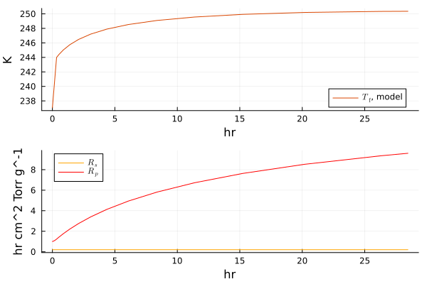

Extending LyoPronto with New Models
LyoPronto provides a flexible framework for lyophilization modeling. This document explains how to implement a new model by walking through an extension of the Pikal model with microwave heating as an example.
The core pattern for adding a new model consists of five steps:
- Define a parameter container (
ParamObjsubtype) - Implement the ODE right-hand-side function
- Provide an
ODEProblemconstructor for your parameter type - (Optional) Add
TransformVariablestransforms for parameter fitting - (Optional) Add plot recipes for visualization
Each step leverages Julia's multiple dispatch, so the fitting machinery in gen_sol_pd, obj_pd, gen_nsol_pd, and objn_pd will work with your new model automatically—provided you follow the conventions below.
Imports
The following imports are used throughout this document.
using LyoPronto
using Unitful
using TransformVariables
using OptimizationOptimJL
using LineSearches
using ADTypes: AutoForwardDiff
using Plots
using Accessors
using LinearAlgebra: Diagonal
using ConcreteStructs: @concrete
using RecipesBaseWe will be adding methods to the following functions, so import them (rather than using).
import LyoPronto: calc_md_Q, get_tstops, calc_u0, ODEProblem0. Write the model equations
Before you implement a new model, you should have a clear idea of what it is. For this example, we will be using the following simple modification of the conventional Pikal model for sublimation, where we add a pressure-dependent stopper resistance $R_s$ to $R_p$.
Heat transfer from shelf to bottom to sublimation front:
\[\begin{aligned} Q_\mathrm{shf} &= K_v (T_\mathrm{sh} - T_f) \\ T_\mathrm{sub} &= T_f - \frac{Q_\mathrm{shf}}{k_\mathrm{ice}} h_\mathrm{f} \end{aligned}\]
Mass transfer:
\[\begin{aligned} R_s &= R_{s0} (1 + a*p_\mathrm{ch}) \\ \dot{m} &= \frac{A_p}{R_s + R_p} (p_\mathrm{sub}(T_\mathrm{sub}) - p_\mathrm{ch}) \end{aligned}\]
Overall pseudosteady energy balance and differential equation for drying progress:
\[\begin{aligned} 0 &= Q_\mathrm{shf} - \dot{m} \Delta H_\mathrm{sub} \\ \frac{d h_f}{dt} &= \frac{\dot{m}}{A_p (\rho_\mathrm{solution} - c_\mathrm{solids})} \end{aligned}\]
In the end we have one differential equation (for $h_f(t)$) and one more degree of freedom which is fixed by our energy balance (which is an algebraic equation), so together we have a differential-algebraic equation (DAE) system.
–
1. Define a parameter container
Every model in LyoPronto has a parameter container type that extends the abstract type ParamObj. This container holds all physical, geometric, and cycle parameters needed by the ODE right-hand-side function.
Conventions
- Subtype
LyoPronto.ParamObjso the fitting machinery recognizes it. - Use the following names for common parameters, so that transforms used in fitting can apply across models more easily:
Rpfor the product mass transfer resistanceKshffor the shelf-to-frozen-product heat transfer coefficient, through a vial. In literature this is commonly denoted $K_v$, with $v$ for vial, but in the microwave model this is distinct from the vial-wall-to-frozen-product coefficient $K_\mathrm{vw-f}$.- Other names, like
pchfor $p_\mathrm{ch}$ andTshfor $T_\mathrm{sh}$, are given without underscores for concision. Fitting for these values is less common so this matters less.
- All the quantities which might vary from one experiment to another are captured in this struct, such as fill volume, but physical constants like the molecular weight of water or enthalpy of sublimation from ice to vapor are provided separately (many by LyoPronto itself, see Physical Properties for a listing) or use Unitful's listing (e.g.
u"R"for the gas constant).
The struct should be declared with @concrete terse (from ConcreteStructs). The @concrete macro ensures that all fields are concretely typed by inferring the most specific type from the values provided at construction time, rather than leaving them as Any. This is critical for performance: it avoids type instability throughout the ODE right-hand-side function and the fitting pipeline, where parameters are accessed repeatedly. The terse keyword avoids printing all the type parameters when structs are shown in the REPL.
Example: ParamObjPikalStopper
Here is a struct with all the parameters we need:
@concrete terse struct ParamObjPikalStopper <: LyoPronto.ParamObj
Rp
Rs0
a
hf0
csolid
ρsolution
Kshf
Av
Ap
pch
Tsh
endIt can be helpful to define and document a helper constructor that makes sure users put these parameters in the correct order, like the following which does a little validation:
"""
ParamObjPikalStopper
Recommended constructor, with tuple of tuples:
ParamObjPikalStopper((
(Rp, Rs0, a),
(hf0, csolid, ρsolution),
(Kshf, Av, Ap),
(pch, Tsh)
))
"""
function ParamObjPikalStopper(tuple_of_tuples::Tuple)
# Check that the proper number of parameters is given
length.(tuple_of_tuples) == (3, 3, 3, 2) || error("Wrong tuple order given to constructor")
# Construct the object
popm = ParamObjPikalStopper(tuple_of_tuples[1]...,
tuple_of_tuples[2]...,
tuple_of_tuples[3]...,
tuple_of_tuples[4]...)
# Validate that callable parameters are actually callable and return correct dimensions
popm.Rp(1u"cm") isa Unitful.Velocity || error("Rp does not return a mass transfer resistance")
popm.Kshf(1u"Torr") * u"m^2"*u"K" isa Unitful.Power || error("Kshf does not return heat transfer coeff")
popm.pch(1.0u"hr") isa Unitful.Pressure || error("pch does not return a pressure")
popm.Tsh(1.0u"hr") isa Unitful.Temperature || error("Tsh does not return an absolute temperature")
# Finally, return the object
return popm
endParamObjPikalStopperThis constructor would be used as follows:
# Specify cycle conditions and formulation properties
Rp = RpFormFit(1.0u"cm^2*Torr*hr/g", 14.0u"cm*Torr*hr/g", 1.0u"cm^-1")
Rs0 = 0.1u"cm^2*Torr*hr/g"
a = 1e-2u"mTorr^-1"
Kshf = ConstPhysProp(25.0u"W/m^2/K") # Kshf needs to be callable
Av = π*(1.1u"cm")^2
Ap = π*(1.0u"cm")^2
Vfill = 5.0u"mL"
hf0 = Vfill/Ap |> u"cm"
csolid = 0.05u"g/mL" # 5% solution
ρsolution = 1.0u"g/mL"
pch = RampedVariable(100u"mTorr")
Tsh = RampedVariable([243.15, 263.15]u"K", 1.0u"K/minute")
# Construct the object
popm = ParamObjPikalStopper((
(Rp, Rs0, a),
(hf0, csolid, ρsolution,),
(Kshf, Av, Ap, ),
(pch, Tsh,),
))ParamObjPikalStopper{}(RpFormFit{}(1.0 hr cm^2 Torr g^-1, 14.0 hr cm Torr g^-1, 1.0 cm^-1), 0.1 hr cm^2 Torr g^-1, 0.01 mTorr^-1, 1.5915494309189535 cm, 0.05 g mL^-1, 1.0 g mL^-1, ConstPhysProp(25.0 W K^-1 m^-2), 3.8013271108436504 cm^2, 3.141592653589793 cm^2, RampedVariable(100 mTorr), RampedVariable(Unitful.Quantity{Float64, 𝚯, Unitful.FreeUnits{(K,), 𝚯, nothing}}[243.15 K, 263.15 K], 1.0 K minute^-1))2. Implement the ODE right-hand-side function
The ODE function has the signature func!(du, u, params, t) where:
duis the output derivative vector (modified in-place).uis the current state vector (unitless).- The first element of
uanddushould be your process completion variable, e.g. still-frozen product, that goes to 0 as drying completes. - The second element of
uanddushould be a temperature which you want compared to experiment, e.g. the bottom center temperature where a thermocouple would be placed. In the Pikal model this is fixed by an algebraic equation for pseudosteady heat and mass transfer.
- The first element of
paramsis yourParamObjinstance.tis the current time (unitless, in hours).
Unit conventions
- Time
tis unitless but represents hours. Dimensionalize inside the function:tn = t * u"hr". - State
uis unitless but has implicit units. Assign them internally: e.g.Tf = u[2] * u"K". - Derivatives
dushould be stripped back to unitless values matching the implicit units:du[2] = ustrip(u"K/hr", dTf).
Example: pikal_stopper!
The extended Pikal model has two state variables: [hf, Tf] (remaining frozen layer thickness, product temperature). It is implemented as a DAE (differential-algebraic equation) with mass matrix Diagonal([1.0, 0.0]), where the algebraic constraint enforces the pseudosteady-state energy balance.
Following the Pikal model pattern, the physics is split into two functions:
- A method for the helper function
calc_md_Q, dispatched on the newParamObjPikalStoppertype, that computes physical quantities (mass flow, heat transfer terms) and returns them as a named tuple. This function can be reused independently for diagnostics or post-solution analysis. - The RHS function (
pikal_stopper!) that calls the helper, then writes derivatives and algebraic residuals todu.
Helper: calc_md_Q
This function unpacks parameters, dimensionalizes state and time, computes all heat and mass transfer terms, and returns a named tuple.
It is very important that this be dispatched on the new parameter struct (ParamObjPikalStopper! in this case) to ensure it is not mixed up with the function as defined for other sets of model equations.
This function should return at least the mass flow rate as md and the shelf-to-frozen-product heat transfer as Q_shf, in order to interoperate with fitting and plotting functions. Feel free to include as many other computed quantities as will be of use (and would be annoying to compute): for example, $T_\mathrm{sub}$ can be computed from known Q_shf and Tf, but if you are interested in plotting it, you can keep your plotting logic in sync with the model logic by returning Tsub in the named tuple here.
@inline function LyoPronto.calc_md_Q(u, po::ParamObjPikalStopper, t)
(;Rp, Rs0, a, hf0, Kshf, Av, Ap, pch, Tsh) = po
td = t * u"hr"
hf = u[1] * u"cm"
Tf = u[2] * u"K"
hd = hf0 - hf
Q_shf = Kshf(pch(td)) * Av * (Tsh(td) - Tf) |> u"W"
Tsub = Tf - (Q_shf) / LyoPronto.k_ice / Ap * hf
# Sublimation mass transfer
delta_p = LyoPronto.calc_psub(Tsub) - pch(td)
Rs = Rs0*(1 + a*pch(td))
md = Ap * delta_p / (Rs + Rp(hd)) |> u"g/hr"
return (; md, Q_shf, Rp=Rp(hd), Rs, Tsub) # Only `md` and `Q_shf` are crucial to the RHS function
endRHS: pikal_stopper!
The RHS function calls the helper, then computes and writes the derivative and residuals.
function pikal_stopper!(du, u, params, t)
(;md, Q_shf) = calc_md_Q(u, params, t)
(; csolid, ρsolution, Ap) = params
dmdt = -md # md > 0, dmdt < 0
Q_sub = uconvert(u"W", dmdt * LyoPronto.ΔHsub)
# Clamp dhf_dt to prevent positive values
dhf_dt = min(0.0u"cm/hr", dmdt / (ρsolution - csolid) / Ap |> u"cm/hr")
du[1] = ustrip(u"cm/hr", dhf_dt)
du[2] = ustrip(u"W", Q_sub + Q_shf) # Qsub < 0
return nothing
endpikal_stopper! (generic function with 1 method)Because this modeal is a DAE system, wrap the RHS in an ODEFunction with a Diagonal mass matrix, with entries of 1.0 for differential equations and 0.0 for algebraic equations.
const pikal_stopper_f = ODEFunction(pikal_stopper!, mass_matrix=Diagonal([1.0, 0.0]))ODEFunction{true, SciMLBase.AutoSpecialize, typeof(Main.pikal_stopper!), LinearAlgebra.Diagonal{Float64, Vector{Float64}}, Nothing, Nothing, Nothing, Nothing, Nothing, Nothing, Nothing, Nothing, Nothing, Nothing, Nothing, Nothing, typeof(SciMLBase.DEFAULT_OBSERVED), Nothing, Nothing, Nothing, Nothing}(Main.pikal_stopper!, Diagonal([1.0, 0.0]), nothing, nothing, nothing, nothing, nothing, nothing, nothing, nothing, nothing, nothing, nothing, nothing, SciMLBase.DEFAULT_OBSERVED, nothing, nothing, nothing, nothing)For your model
If your model is a DAE (like the Pikal model), wrap the RHS in an ODEFunction with a mass_matrix argument, then pass the ODEFunction to ODEProblem. If it is a set of ODEs without any algebraic constraints, the RHS function as defined can be passed directly to the ODEProblem constructor.
3. Define an ODEProblem constructor
The fitting functions gen_sol_pd and gen_nsol_pd call ODEProblem(param_obj) to construct the problem. By defining a method for your ParamObj subtype, your model can be integrated with the entire fitting pipeline.
Required helper methods
Before defining ODEProblem, you need two helpers:
calc_u0(po::YourParamObj)
Returns the initial condition vector u0 as a unitless Vector{Float64}. This needs to be kept in sync with the RHS function defined previously. Note also that the default DAE initialization used to satisfy algebraic constraints, BrownFullBasicInit(), will treat the initial conditions for algebraic variables as a guess, so algebraic variables need not be exact for this function.
function LyoPronto.calc_u0(po::ParamObjPikalStopper)
return [ustrip(u"cm", po.hf0), ustrip(u"K", float(po.Tsh(0u"s")))-1]
endget_tstops(po::YourParamObj)
This is used to compute a sorted, unique vector of time points where cycle conditions aren't differentiable (e.g. at the corner where ramp goes to flat setpoint hold). These are used as tstops in the ODE solver for accuracy.
The method of this function which accepts a Tuple will automatically call LyoPronto.extract_ts which identifies all the corners of a RampedVariable and all the time points of a LinearInterpolation.
function LyoPronto.get_tstops(po::ParamObjPikalStopper)
get_tstops((po.Tsh, po.pch))
endODEProblem(po::YourParamObj; u0=calc_u0(po), tspan=(0.0, 1000.0))
In the type parameters of ODEProblem, the true informs the solver that the derivatives are computed in-place in a passed vector, and FullSpecialize ensures that compilation is fully specialized on all types. Using FullSpecialize incurs a greater compilation cost to speed up calculation, but more importantly it avoids some kinds of problems with automatic differentation (particularly this issue, at time of writing).
function LyoPronto.ODEProblem(po::ParamObjPikalStopper; u0=calc_u0(po), tspan=(0.0, 1000.0))
tstops = get_tstops(po)
return ODEProblem{true, SciMLBase.FullSpecialize}(
pikal_stopper_f, u0, tspan, po;
tstops=tstops, callback=end_drying_callback,
initializealg=BrownFullBasicInit(), dt=0.1
)
endKey points:
- The first argument to
ODEProblemis your RHSODEFunction(or bare function for explicit ODEs). callback=end_drying_callbackterminates integration when drying is complete (frozen layer thickness approaches zero, i.e. ≈ 1e-10).- For DAEs,
initializealg=BrownFullBasicInit()provides consistent initial conditions. tspanshould be very large, e.g. 1000 hours—the callback will stop simulation when drying is done.- Use
get_tstopsas defined above is used to ensure simulation treats all the non-smooth points. dt=0.1is a conservative estimate; time steps often exceed hours.- This is a natural place to add any other keyword arguments for the solver, such as tolerances.
To actually run a simulation, now, the following is enough:
prob = ODEProblem(popm)
# Use an algorithm specified by LyoPronto: Rodas5P() with specific autodiff settings
sol = solve(prob, LyoPronto.odealg_chunk2)retcode: Terminated
Interpolation: specialized 4th (Rodas6P = 5th) order "free" stiffness-aware interpolation
t: 17-element Vector{Float64}:
0.0
0.1
0.22363873656088967
0.33333333333333287
0.51988721789042
0.8752963983089364
1.3914415482561107
2.0955781169105006
3.0606735643100187
4.356763960397697
6.088425656736046
8.375057863759459
11.36792778884658
15.236604635353437
20.161907487970847
26.289238673671942
28.45866826533953
u: 17-element Vector{Vector{Float64}}:
[1.5915494309189535, 237.0580940769988]
[1.5882993821921858, 239.1444351619798]
[1.582090137829355, 241.7071819148643]
[1.5745529469124537, 243.9918512665572]
[1.5602709770097363, 244.39179885101095]
[1.533815323529195, 245.02653688865115]
[1.4968135449217976, 245.74401264416727]
[1.448404228421497, 246.47727588186493]
[1.3849131257200251, 247.20720334421935]
[1.3033701206744235, 247.89883156930742]
[1.199059545779885, 248.53334087688683]
[1.0668198551947408, 249.092005113878]
[0.8999392667484903, 249.56230653775035]
[0.6907684613259039, 249.93311723987796]
[0.4307229344267055, 250.19483606423825]
[0.11217566736713444, 250.33785421328415]
[1.0000019308501985e-10, 250.3568167219842]4. (Optional) Add TransformVariables transforms for fitting
LyoPronto uses the TransformVariables package to map unconstrained optimization parameters to physically meaningful ranges. Convenience functions already exist for common parameters:
K_transform_basic— transforms forKshf(shelf heat transfer coefficient)Rp_transform_basic— transforms forRp(product resistance)
How transforms work
A transform maps a flat Vector{Float64} to a NamedTuple of parameter values:
trans_K = K_transform_basic(5.0u"W/m^2/K")[1:1] NamedTuple of transformations
[1:1] :Kshf → ConstPhysProp wrapper on Tuple of transformations
[1:1] 1 → TVScale(5.0 W K^-1 m^-2) ∘ asℝ₊Maps a scalar to (; Kshf = ConstPhysProp(5.0u"W/m^2/K"))
To add a transform for a new parameter, compose scalar transforms with appropriate units for each parameter, and nest them inside a transform to named tuple.
How fitting uses transforms
The fitting functions expect a tuple tpf = (transform, param_objs, fitdats). Internally they:
- Call
transform(tr, fitlog)to get aNamedTupleof parameters. - Call
setproperties(po, fitprm)to merge fitted params into the baseParamObj. - Call
ODEProblem(new_po)to construct the ODE, then solve the ODE. - Compare the solution to data in a
PrimaryDryFit.
Because setproperties (from ConstructionBase) works on any struct, and ODEProblem dispatches on your ParamObj subtype, no additional code is needed for fitting to work.
5. (Optional) Add plot recipes
LyoPronto uses RecipesBase to provide plot recipes for custom types.
The plot recipe modconvtplot will plot the 2nd variable of your state vector u (defined for the ODE RHS function) as a temperature. If you would like to plot other quantities specific to your model, you can add recipes like the following:
@userplot PikalStopperRPlot
@recipe function f(pmqp::PikalStopperRPlot)
sol = pmqp.args[1]
summary = summary_md_Q(sol) # This calls calc_md_Q at all saved time steps
xunit --> u"hr"
yunit --> u"cm^2*hr*Torr/g"
@series begin
color --> "orange"
label --> "\$R_s\$"
return summary.t, summary.Rs
end
@series begin
color --> "red"
label --> "\$R_p\$"
return summary.t, summary.Rp
end
endFor a solution sol with the above model, this would then be called as
pl2 = pikalstopperrplot(sol)
# which we can combine with
pl1 = modconvtplot(sol)
plot(pl1, pl2, link=:x, layout=(2,1))
Summary checklist
To add a new model to LyoPronto, implement:
| Step | Required? | Purpose |
|---|---|---|
ParamObj subtype | Yes | Container for all model parameters |
| ODE RHS function | Yes | Model physics |
ODEFunction with mass matrix | Yes if algebraic equations | For DAE models (e.g., Pikal-style) |
calc_u0 method | Yes | Initial conditions |
get_tstops method | Yes | Solver accuracy at ramp transitions |
ODEProblem method | Yes | Problem construction for solving and fitting |
TransformVariables transforms | Optional | Parameter fitting support |
| Plot recipes | Optional | Visualization |
Once these are in place, the existing functions gen_sol_pd, obj_pd, gen_nsol_pd, objn_pd, nls_pd, and nls_pd! will work with your model automatically.
This page was generated using Literate.jl.